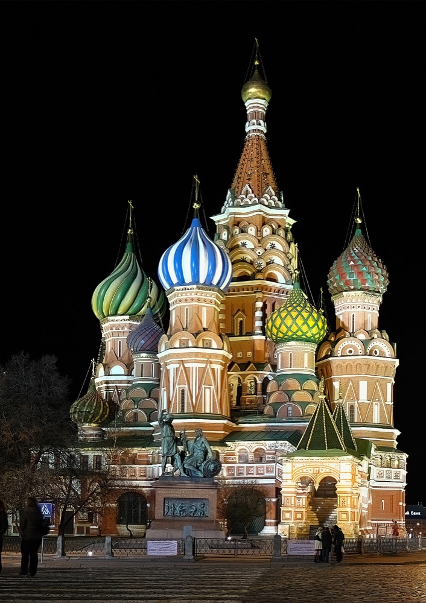

Россия

Одиннадцать часовых поясов — и у каждого свой характер: в Калининграде ещё Европа с черепичными крышами, а на Камчатке уже чёрный лавовый пепел и океан в тумане геотермальных источников. Всю страну за одну поездку не взять, да и не нужно: выберите два контраста и соедините их железной дорогой. Москва утром — Красная площадь до первого автобуса, когда башни ещё стоят в одиночестве. Затем «Сапсан» — и Петербург, где каналы работают лучше любой открытки: с мостами, белыми ночами и ласточками в довесок. Дальше либо Золотое кольцо с куполами над тихими городами, либо Байкал зимой — лёд в полметра толщиной, звенящий под ногами, как стекло. Летом Камчатка отдаёт всё разом: кратеры, медведей на рыбалке и туманы, съедающие горизонт быстрее, чем вы успеваете снимать. Россия не смотрится — она переживается: ночной поезд с чаем в подстаканнике остаётся в памяти надёжнее любого маршрута. Начните с Москвы — и вы сами не заметите, как начнёте планировать Владивосток.
Что знать перед поездкой
- Сапсан» Москва—Питер экономит целый день
- Красную площадь — ранним утром
- Ночная электричка — отдельная романтика